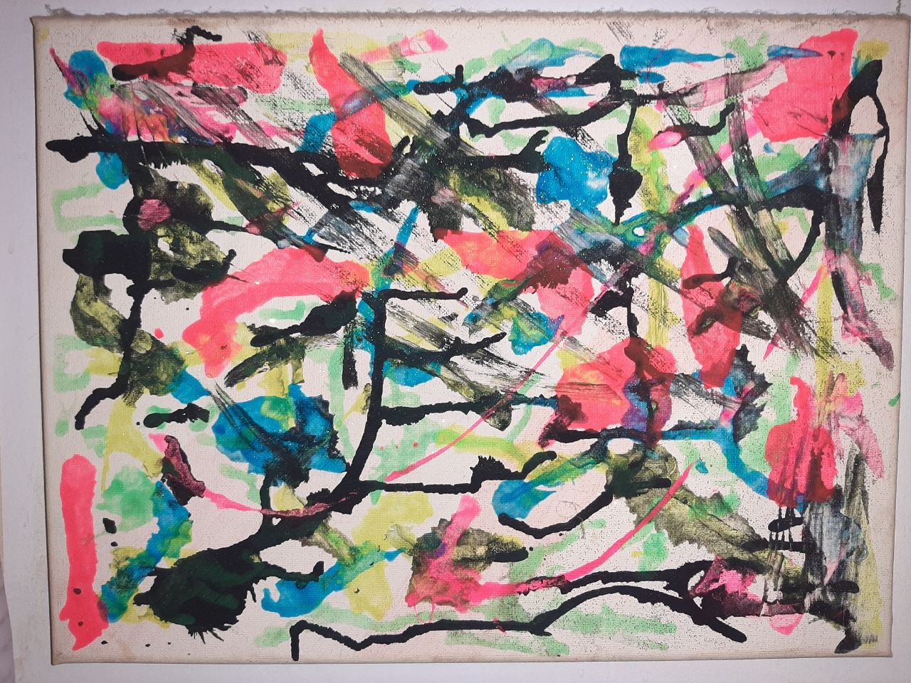
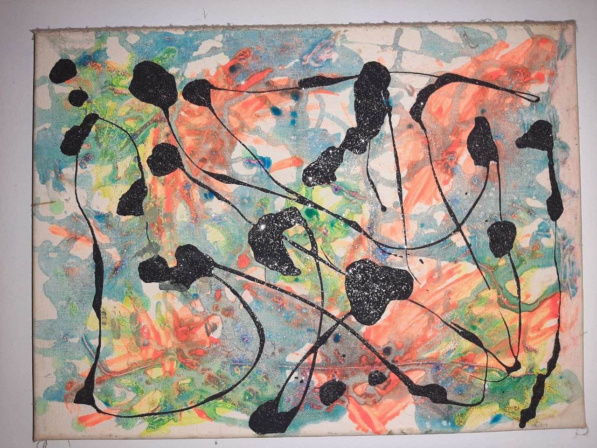
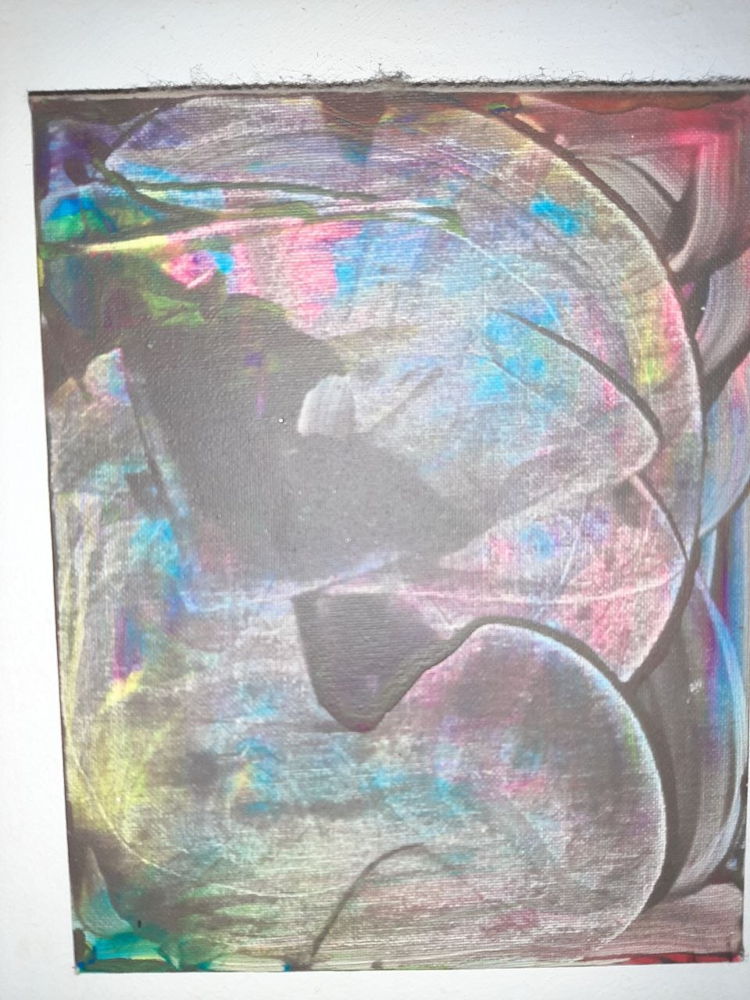
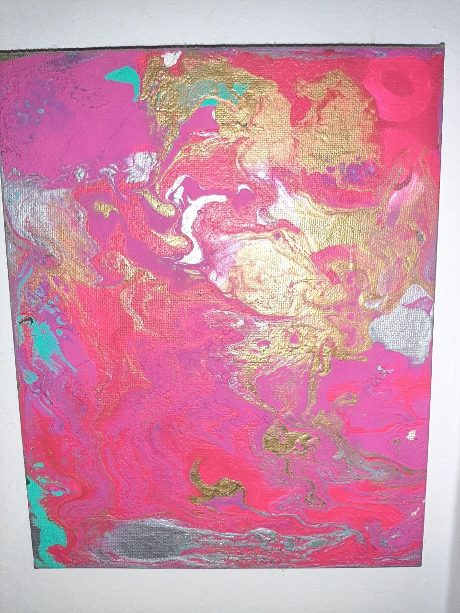

About Abstract Emporium
The making behind the candles, the knits, and the paint.
I guess you could say I had a creative side growing up — I just never really explored it, and didn't think I could. I remember making these little bookmarks as a kid, drawing them up and colouring them in with all sorts of wacky colours. That was about the extent of it.
Then the teens came, and work, and figuring out what I wanted to do with my life. The creativity pretty much went to the wayside. It wasn't really a part of how I saw myself.
A real parade of side quests started in my late 20s — some big changes in my life. And then one afternoon, on a day off work, I just decided to grab some paint and spread it all over the place. I remember making a total mess out of paint, and how much fun that was. That's where it started — going down rabbit holes of different mediums, learning to use a heat gun to pull the cell effects in fluid acrylics. I still have those first paintings — four of them, each standing on its own — from when I first started, over a decade ago. They're still with me.




Through my late 20s into my early 30s, and again in my mid-30s, a lot of big life changes landed and dramatically shifted things. I picked up a pen and a sketch pad and started drawing freehand — sometimes just observing what was on my screen, or picking out a special character and running with it. I've been freehand drawing for about two or three years now.
From the fluid-acrylic pouring cups to the freehand drawing, it became a creative outlet. I noticed that once I got into healthcare and started working in the field, all of those little hobbies went to the wayside — right up until I got severely hurt.
After the injury, a lot of things shifted. I'd lost my work in healthcare to becoming disabled, and I needed a way to do some therapy — to find relief and distraction from that loss. That's where I got back into my fluid arts and pushed myself into freehand drawing. I try to make it a regular habit now. Recently I've started drawing on canvases and painting from my freehand work, which has been a fun thing to explore. In a sense I'm grateful it brought me back to creativity, despite the circumstances that did it.
On top of that, I've always had a huge thing for smells — I love all sorts of yummy scents, and I've always kept candles and incense around. Before I got hurt I was already exploring the idea of making candles, and I went ahead and tried it. Then the workplace injuries set in and that got put on hold. I recently restarted it — I'd missed it, and it's very therapeutic for me.
Knitting is something I've done since I was a kid — my mom and my mémère taught me, along with a little crochet. I remember making little knit squares as a child and donating them locally, where they'd get sewn together into blankets; I must've knit hundreds of those tiny squares. From them I learned scarves and knitted phennex slippers.
In my 20s and early adulthood I didn't do much of it — I was fully dedicated to my passion for working in healthcare. Knitting came back after the workplace injuries, and I started making slippers, scarves, and wash cloths again. I figured out knitted Swiffer WetJet pads too — those store-bought ones are costly, so I found an eco way: knit them, toss them in the wash, reuse. It's saved me a lot of money.
I also taught myself tuques and the pom-poms, and the stocking caps with long tails — that one was all on my own. Socks are still on the to-learn list; they need five needles and I'm not used to that yet, but I'm working on it.
It's not something I can do in large amounts, because of the physical injuries I live with. There's a lot of navigating between how my body feels and what I'm actually able to do on any given day, using spoon theory to pace it.
Abstract Emporium is where all of that lives now — the hand-poured candles, wax melts, and incense of Z3NW1CK, the slippers, tuques, wash cloths, and scarves of Lissa's Knitting Creations, and the abstract art that started with a mess and a free afternoon.
Want to see the work? View the gallery, shop Z3NW1CK, or browse the knits.